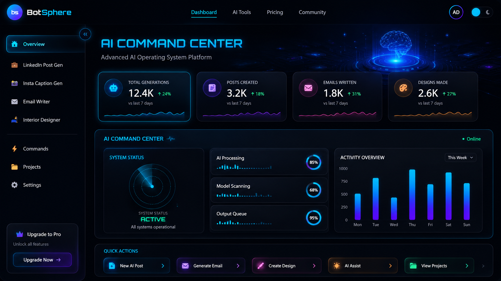
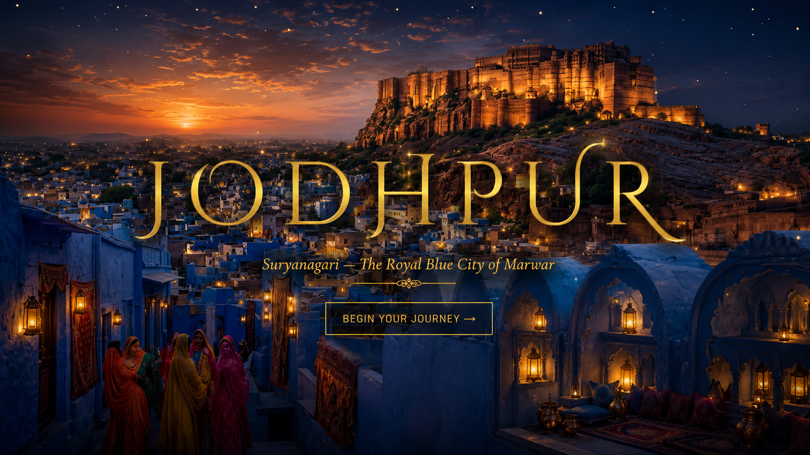
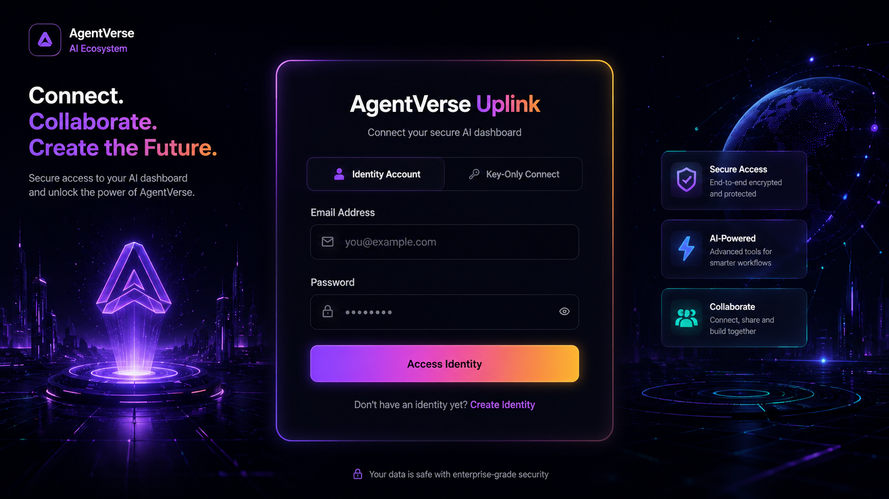
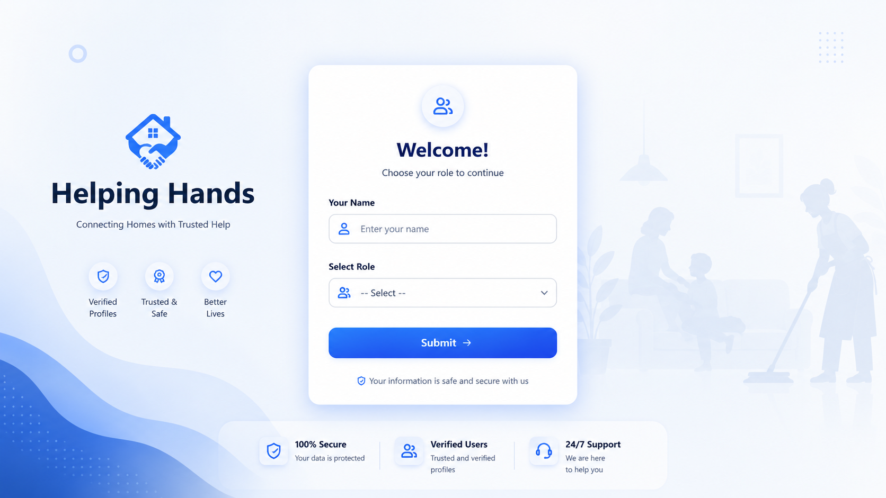
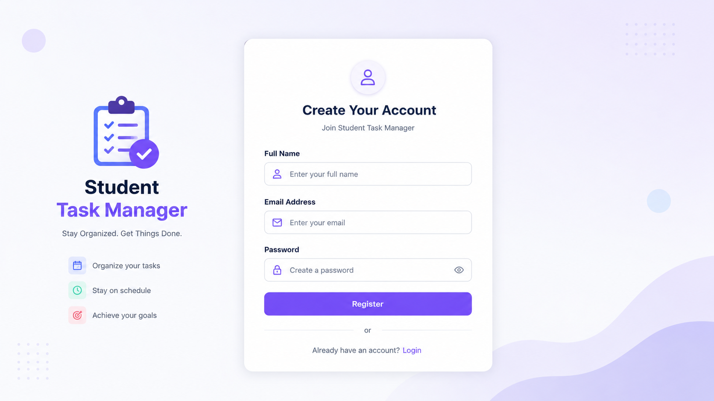
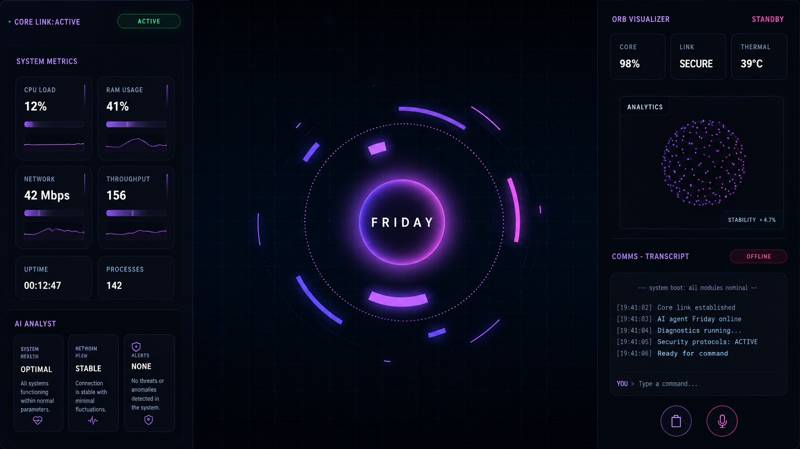

My Projects
Here are some of my featured projects showcasing my skills in web development and design.

BotSphere
An AI-powered multi-agent platform that streamlines communication, automation, and intelligent task execution through advanced conversational assistants and real-time interactions.

3D Web Experience
An immersive 3D web experience built with modern animations and interactive design to showcase creativity, innovation, and next-generation user engagement.

AgentVerse
A multi-agent AI platform that delivers human-like conversations, real-time voice interaction, and customizable AI assistants for productivity, learning, and professional growth.

Helping Hands
A platform connecting volunteers with people in need. Developed with HTML, CSS, JavaScript, and PHP to promote social good and community service.

Student Task Manager
A student-focused task management web application for creating, updating, tracking, and organizing tasks with priorities and deadlines.

Friday AI – Personal Voice Agent
Friday AI is my personal AI voice assistant inspired by JARVIS. It understands natural language, responds using voice, assists with daily tasks, and demonstrates modern conversational AI and intelligent automation.